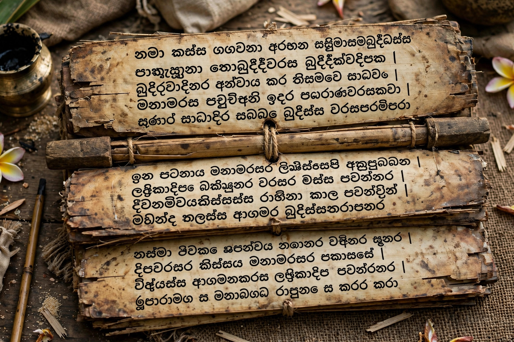

Mahavamsa
| Mahāvaṃsa | |
|---|---|
| Language | Pali |
| Compiled | 5th–6th century CE |
| Attributed to | The monk Mahānāma |
| Subject | History of Sri Lanka and Buddhism |
The Mahavamsa ("Great Chronicle", Pali Mahāvaṃsa) is an epic poem in Pali recording the history of Sri Lanka from legendary beginnings to the reign of King Mahasena (c. 277–304 CE). It is the most important historical source for the early history of the island and of Theravada Buddhism.

1. Contents
2. Historical value
3. Political legacy
Contents
The chronicle recounts the coming of Prince Vijaya from India, the island's first king; the mission of Mahinda, son of the emperor Ashoka, who brought Buddhism to Sri Lanka; and the heroic resistance of King Dutugamunu against the Tamil ruler Elara. It describes the building of great stupas and monasteries and the arrival of the sacred Bodhi Tree sapling at Anuradhapura.
Historical value
Though written some seven centuries after the earliest events it describes, the Mahavamsa draws on older Sinhala commentaries and its king lists and religious history are broadly corroborated by inscriptions and Indian sources. An earlier chronicle, the Dipavamsa, and a continuation, the Culavamsa, together give Sri Lanka an unusually continuous recorded history.
Political legacy
The Mahavamsa's portrayal of Sinhalese Buddhist kings defending the island's faith has been highly influential in modern Sinhalese national consciousness, for better and worse, including during the Sri Lankan Civil War.
See also: Sinhala language · Dipavamsa · Anuradhapura